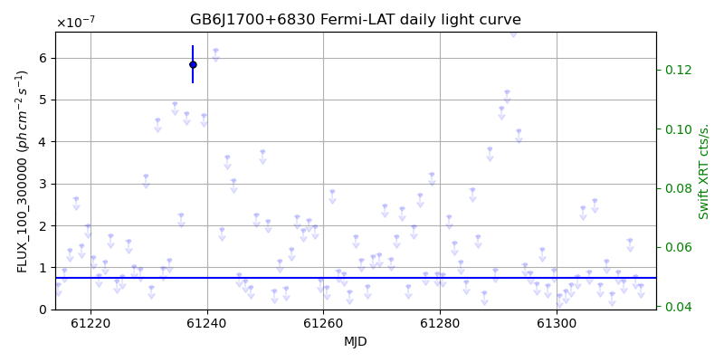
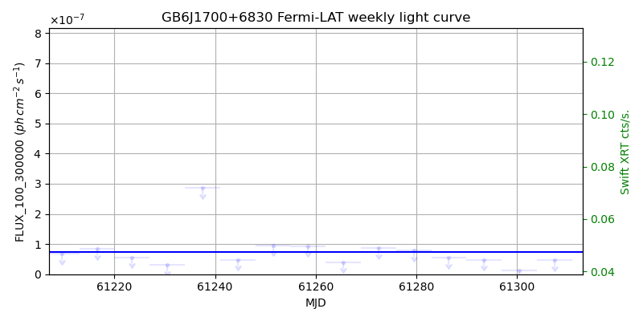
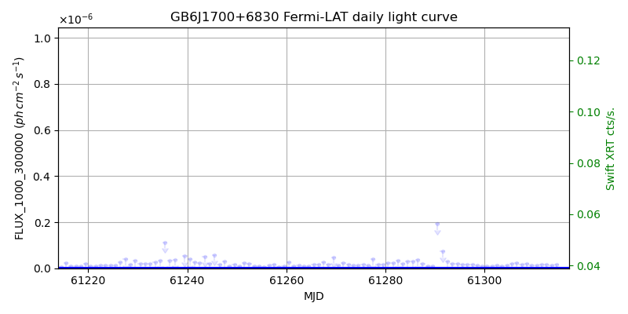
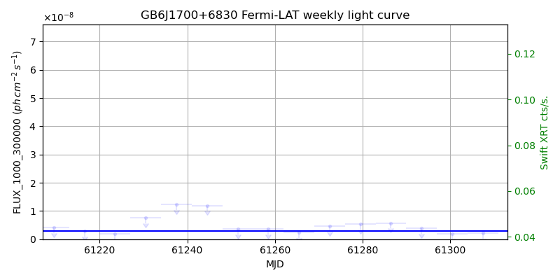

LAT Lightcurve site: https://fermi.gsfc.nasa.gov/ssc/data/access/lat/msl_lc/source/GB6_J1700p6830
Swift site: https://www.swift.psu.edu/monitoring/source.php?source=GB6J1700+6830
NED: Query
Time of last update of this page: UT: 2026-10-02 15:22 (MJD: 61315.641)
| Property | Value |
|---|---|
| R.A. | 17:00:09.36 |
| Dec. | 68:30:07.2 |
| z | 0.301 |
| 3FGL SpectrumType | PowerLaw |
| 3FGL PL Index | 2.40 |
| 3FGL Flux_100_300000 | 7.47e-08 1 / (s cm2) |
| 3FGL Flux_1000_300000 | 2.99e-09 1 / (s cm2) |
| 3FGL Flux >200 GeV | 1.81e-12 1 / (s cm2) |
| 3FGL Extrap. Crab >200 GeV | 0.01 |
| 3FGL Flux After EBL Absorption >200GeV | 6.21e-13 1 / (s cm2) |
| 3FGL EBL Crab Fraction >200GeV | 0.00 |

| MJD | dMJD | Flux | dFlux | Frac3FGL | FracCrab>200GeV | EBLFracCrab>200GeV |
|---|---|---|---|---|---|---|
| 61310.50 | 0.50 | 8.99e-08 | 0.00e+00 | 0.00 | 0.00 | 0.00 |
| 61311.50 | 0.50 | 6.87e-08 | 0.00e+00 | 0.00 | 0.00 | 0.00 |
| 61312.50 | 0.50 | 1.66e-07 | 0.00e+00 | 0.00 | 0.00 | 0.00 |
| 61313.50 | 0.50 | 7.90e-08 | 0.00e+00 | 0.00 | 0.00 | 0.00 |
| 61314.50 | 0.50 | 5.76e-08 | 0.00e+00 | 0.00 | 0.00 | 0.00 |

| MJD | dMJD | Flux | dFlux | Frac3FGL | FracCrab>200GeV | EBLFracCrab>200GeV |
|---|---|---|---|---|---|---|
| 61279.50 | 3.50 | 7.78e-08 | 0.00e+00 | 0.00 | 0.00 | 0.00 |
| 61286.50 | 3.50 | 5.51e-08 | 0.00e+00 | 0.00 | 0.00 | 0.00 |
| 61293.50 | 3.50 | 4.83e-08 | 0.00e+00 | 0.00 | 0.00 | 0.00 |
| 61300.50 | 3.50 | 1.13e-08 | 0.00e+00 | 0.00 | 0.00 | 0.00 |
| 61307.50 | 3.50 | 4.67e-08 | 0.00e+00 | 0.00 | 0.00 | 0.00 |

| MJD | dMJD | Flux | dFlux | Frac3FGL | FracCrab>200GeV | EBLFracCrab>200GeV |
|---|---|---|---|---|---|---|
| 61310.50 | 0.50 | 1.36e-08 | 0.00e+00 | 0.00 | 0.00 | 0.00 |
| 61311.50 | 0.50 | 1.62e-08 | 0.00e+00 | 0.00 | 0.00 | 0.00 |
| 61312.50 | 0.50 | 1.44e-08 | 0.00e+00 | 0.00 | 0.00 | 0.00 |
| 61313.50 | 0.50 | 1.38e-08 | 0.00e+00 | 0.00 | 0.00 | 0.00 |
| 61314.50 | 0.50 | 1.52e-08 | 0.00e+00 | 0.00 | 0.00 | 0.00 |

| MJD | dMJD | Flux | dFlux | Frac3FGL | FracCrab>200GeV | EBLFracCrab>200GeV |
|---|---|---|---|---|---|---|
| 61279.50 | 3.50 | 5.34e-09 | 0.00e+00 | 0.00 | 0.00 | 0.00 |
| 61286.50 | 3.50 | 5.71e-09 | 0.00e+00 | 0.00 | 0.00 | 0.00 |
| 61293.50 | 3.50 | 3.78e-09 | 0.00e+00 | 0.00 | 0.00 | 0.00 |
| 61300.50 | 3.50 | 2.00e-09 | 0.00e+00 | 0.00 | 0.00 | 0.00 |
| 61307.50 | 3.50 | 2.19e-09 | 0.00e+00 | 0.00 | 0.00 | 0.00 |
--------------------------------------------------------- Using user-supplied coords: 17:00:09.36 68:30:07.2 2000 --------------------------------------------------------- FLWO UT night of: 2026-10-03 Local Sid. @ Midnight: 00:24 Sunset (-15.0) (local, UT): 19:14 02:14 Sunrise (-15.0) (local, UT): 05:12 12:12 Moonrise (local, UT): 22:48 05:48 Moonset (local, UT): Moon phase: 0.53 --------------------------------------------------------- AzTime LSID UT Obj_el Obj_az Mn_el Mn_az Sep. --------------------------------------------------------- 19:14 19:37 02:14 46.9 340.1 -28.5 20.1 83.6 19:44 20:07 02:44 44.6 337.9 -26.2 26.7 83.6 20:14 20:37 03:14 42.1 336.3 -23.2 32.8 83.5 20:44 21:07 03:44 39.5 335.2 -19.6 38.5 83.5 21:14 21:37 04:14 36.8 334.6 -15.7 43.6 83.4 21:44 22:07 04:44 34.0 334.5 -11.3 48.4 83.4 22:14 22:37 05:14 31.3 334.7 -6.5 52.7 83.3 22:44 23:07 05:44 28.6 335.3 -0.8 56.7 83.2 23:14 23:37 06:14 25.9 336.3 3.8 60.4 83.2 23:44 00:07 06:44 23.4 337.5 9.1 63.9 83.1 00:14 00:38 07:14 21.1 339.0 14.6 67.1 83.1 00:44 01:08 07:44 18.9 340.8 20.3 70.2 83.0 01:14 01:38 08:14 16.9 342.8 26.1 73.1 82.9 01:44 02:08 08:44 15.1 345.0 32.1 76.0 82.9 02:14 02:38 09:14 13.6 347.4 38.1 78.8 82.9 02:44 03:08 09:44 12.3 349.9 44.2 81.7 82.8 03:14 03:38 10:14 11.4 352.5 50.3 84.8 82.8 03:44 04:08 10:44 10.7 355.2 56.5 88.1 82.7 04:14 04:38 11:14 10.3 358.0 62.7 91.9 82.7 04:44 05:08 11:44 10.2 0.8 68.9 96.9 82.7 05:12 05:37 12:12 10.5 3.5 74.7 103.8 82.7 --------------------------------------------------------- Source never above horizon of 55.0 deg. Dark hours >55 deg.: 0.00